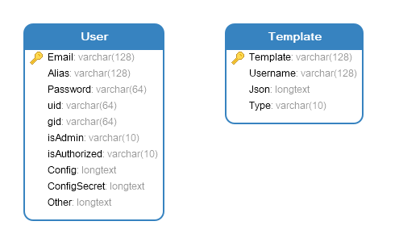

4.5: db
钱江源系统将job信息、集群状态信息等数据保存在DLWorkspaceCluster数据库中，这里简单介绍下进入Mysql docker容器产看关键表Jobs信息的方式。
docker ps
docker inspect containerid
#在"Config":"Env":"MYSQL_ROOT_PASSWORD=*******"找到相应的mysql 服务的root密码
docker exec -it containerid bash
mysql -uroot -p
#输入上述密码
show databases;
#进入DLWorkspaceCluster库中
use DLWorkspaceCluster-id
show tables
#查看job表数据
select * form jobs
表结构如下：
jobtable
`id` INT NOT NULL AUTO_INCREMENT,
`jobId` varchar(50) NOT NULL,
`familyToken` varchar(50) NOT NULL,
`isParent` INT NOT NULL,
`jobName` varchar(1024) NOT NULL,
`userName` varchar(255) NOT NULL,
`jobStatus` varchar(255) NOT NULL DEFAULT 'unapproved',
`jobStatusDetail` LONGTEXT NULL,
`jobType` varchar(255) NOT NULL,
`jobDescriptionPath` TEXT NULL,
`jobDescription` LONGTEXT NULL,
`jobTime` DATETIME DEFAULT CURRENT_TIMESTAMP NOT NULL,
`endpoints` LONGTEXT NULL,
`errorMsg` LONGTEXT NULL,
`jobParams` LONGTEXT NOT NULL,
`jobMeta` LONGTEXT NULL,
`jobLog` LONGTEXT NULL,
`retries` int NULL DEFAULT 0,
PRIMARY KEY (`id`),
INDEX (`userName`),
INDEX (`jobTime`),
INDEX (`jobId`),
INDEX (`jobStatus`)
jobtable中需要关注的几个重要字段：
- jobName ：所运行任务的类型名，如pytorch-bert还是tensorflow training
- jobStatus ：所运行job的状态字段，filed/killed/error等
- userName : job归属账号
- jobTime : job创建时间
clusterstatustable
`id` INT NOT NULL AUTO_INCREMENT,
`status` TEXT NOT NULL,
`time` DATETIME DEFAULT CURRENT_TIMESTAMP NOT NULL,
PRIMARY KEY (`id`)
commandtable
`id` INT NOT NULL AUTO_INCREMENT,
`jobId` varchar(50) NOT NULL,
`status` varchar(255) NOT NULL DEFAULT 'pending',
`time` DATETIME DEFAULT CURRENT_TIMESTAMP NOT NULL,
`command` TEXT NOT NULL,
`output` TEXT NULL,
PRIMARY KEY (`id`)
usertable
`id` INT NOT NULL AUTO_INCREMENT,
`username` varchar(255) NOT NULL,
`userId` varchar(255) NOT NULL,
`time` DATETIME DEFAULT CURRENT_TIMESTAMP NOT NULL,
PRIMARY KEY (`id`)
注：为了安全及逻辑清晰，钱江源通过分库分表的形式另外保存特殊用户如管理员的信息。AuthorizeUser库的两张表字段设计如下，不再赘述。
